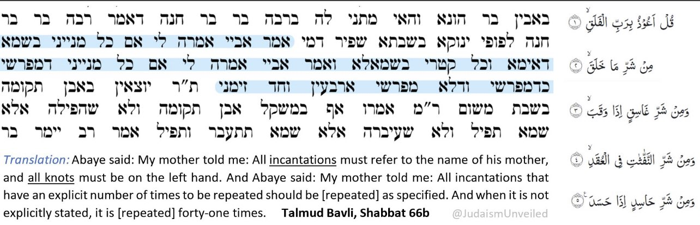

Black Magic: Contradictions between the Torah and Talmud
The Torah is 100% against black magic and advocates the death penalty for them
👇
“Do not allow a sorceress to live.”
(Exodus 22:18)
“‘A man or woman who is a medium or spiritist among you must be put to death. You are to stone them; their blood will be on their own heads.’”
(Leviticus 20:27)
“Let no one be found among you who sacrifices their son or daughter in the fire, who practices divination or sorcery, interprets omens, engages in witchcraft, or casts spells, or who is a medium or spiritist or who consults the dead.”
(Deuteronomy 18:10-11)
Meanwhile the Talmud completely supports and permits black magic
👇
Rabbi Schlomo wrote, “I see in the Babylonian Talmud things that which were permitted from the realm of fortune-telling, incantations, and witchcraft… these are innumerable…”
(Responsa of the Rashba 1:413)
“If one wishes to see demons, let him take the afterbirth of a black she-cat, let him roast it in fire and grind it powder, and let him put some into his eye…”
(Berakoth, Folio 6A)
“What is an improved amulet? One that has healed once, a second time and a third time.”
(Shabbat 61A)
“The course of the constellations and zodiac has influence as natural law upon the world, and everything depends on it: longevity, children, finances.”
(Moed Katan 28A)
——
Talmudic Incantations on Knots

In this particular passage, the incantation on knots were for healing. However, there's no reason to believe that incantations on knots can't be for harm/magic, as attested to by other Talmudic passages.
——
A Jew Using Black Magic to Turn a Woman into a Donkey
According to the Talmud, a Jew used sorcery to make a woman into a donkey as retaliation
https://muslimskeptic.com/2023/02/05/magic-and-superstition-in-orthodox-judaism/
https://m.youtube.com/watch?v=0aLyKyzeZhE